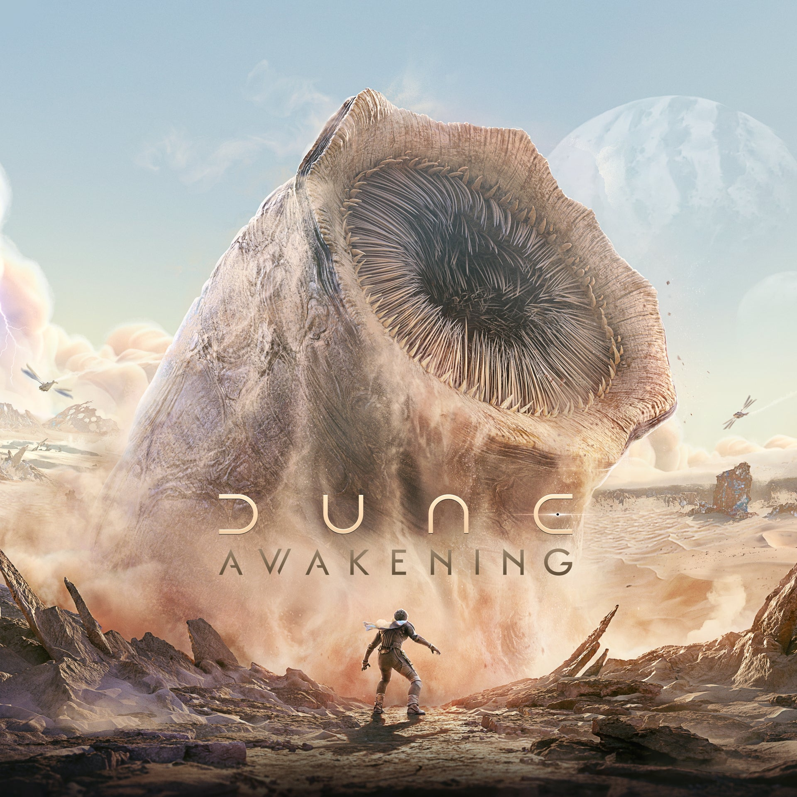
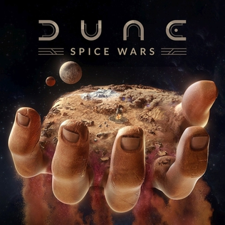

Dune: Imperium
"Dune: Imperium" es un juego de mesa estratégico basado en el universo de "Dune", la icónica serie de novelas de ciencia ficción escritas por Frank Herbert. En el juego, los jugadores asumen el papel de líderes de grandes casas
nobles compitiendo por el control del planeta desértico de Arrakis y sus valiosos recursos, incluida la especia melange. A lo largo del juego, los jugadores deben enfrentarse a desafíos y misiones mientras luchan por establecer su
dominio sobre Arrakis. El juego combina elementos de construcción de mazos, colocación de trabajadores y mecánicas de juego de mesa de estilo eurogame para ofrecer una experiencia estratégica profunda y temática dentro del universo
de "Dune".
Dune awakening
Dune: Awakening combina el valor y la creatividad de los juegos de supervivencia sandbox con la interactividad social de un juego multijugador grande y persistente para crear un MMO de supervivencia en mundo abierto único y ambicioso.
Crea tu identidad y desarrolla tus habilidades, desde la creación profunda de personajes hasta habilidades y destrezas enseñadas por especialistas como Mentats y Bene Gesserit. Declara tu lealtad por lo que vistes y hazte conocido
por lo que haces, ya seas un maestro especializado o un adepto con múltiples talentos. Dune: Awakening da vida a los paisajes épicos de Arrakis. Explora infinitas dunas onduladas, antiguos laboratorios ecológicos subterráneos y profundos
cañones plagados de cuevas, donde los bandidos buscan presas fáciles. Pasea por los bulliciosos pueblos antes de desafiar el profundo desierto sin ley y en constante cambio.
Dune Spice Wars
Dune: Spice Wars es un juego de estrategia en tiempo real (RTS) y 4X (eXplore, eXpand, eXploit, eXterminate) que se centra en la lucha por el control y la dominación del planeta de Arrakis en el universo de Dune. El juego ofrece
una experiencia dinámica y desafiante, con un sistema de combate y diplomacia que recompensa la estrategia y la planificación. Algunas de las características destacadas de Dune: Spice Wars incluyen:Facciones: El juego presenta varias
facciones, como los Atreides, los Harkonnen, los Fremen, los contrabandistas y los Corrino, cada una con características y habilidades únicas que añaden variedad a la jugabilidadCombatividad: El combate en Dune: Spice Wars es serviceable,
pero puede ser olvidable en comparación con otras características del juego. Sin embargo, la espionaje y la política se han convertido en metajuegos interesantes en sí mismosDificultad: El juego ofrece un desafío significativo, especialmente
para los jugadores de estrategia experimentados. La dificultad se puede ajustar a través de los niveles de dificultad y la personalización de las facciones